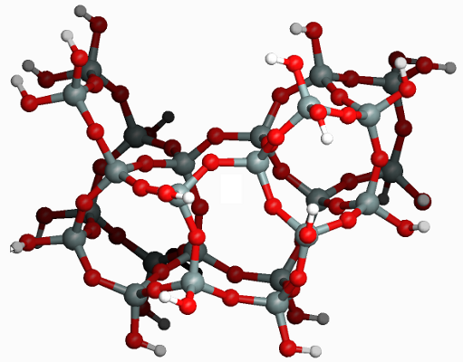

Pattern-matching in molecular graphs¶
Introduction¶
Pattern matching in MolMod is a Pythonic extensible alternative to the SMARTS patterns introduced by Daylight Chemical Information Systesm. It can be used to define and detected force-field atom types in molecular graphs, to enumerate chemical fragments in molecular graphs, or even to restore atom order consistency for a bunch of different geometries with the same topology.
The pattern matching functionality is implemented in the modules
molmod.graphs and molmod.molecular_graphs, but it can all be
accesseded with a single import statemenent, i.e. from molmod import *.
Examples¶
Basic atom types in propane¶
The script below detects the following atom types based on the bond graph of the propane molecule.
cach3: Carbon in CH3 groupcach2: Carbon in CH2 grouphach3: Hydrogen in CH3 grouphach2: Hydrogen in CH2 group
An atom type in MolMod is defined as a function that takes two arguments: an
integer atom index and a MolecularGraph instance. The function returns True
when the atom is of the type associated with the function and False
otherwise. For example the following function represents a generic Carbon atom
type:
def is_carbon(index, graph):
return graph.numbers[index] == 6
One can list all carbons in a molecule by looping over all atoms and testing
each atom with the is_carbon function:
1 2 3 4 5 6 | molecule = Molecule.from_file("propane.xyz")
molecule.set_default_graph()
for i in xrange(molecule.graph.num_vertices):
if is_carbon(i, graph):
carbons.append(i)
print carbons
|
One can go beyond the basics by adding extra requirements to the atom type function, e.g. as follows:
1 2 3 4 5 6 7 8 9 10 11 12 13 14 | def is_cach3(index, graph):
if graph.numbers[index] != 6:
return False
nis = graph.neighbors[index]
if len(n) != 4:
return False
count_h = 0
count_c = 0
for ni in nis:
if graph.numbers[ni] == 1:
count_h += 1
elif graph.numbers[ni] == 6:
count_c += 1
return (count_h==3) and (count_c==1)
|
This atom type definition can be used in exactly the same way as the
is_carbon function. It is clear that atom types based on simple explicit
functions are error prone and time-consuming. Therefore the modules
molmod.graphs and molmod.molecular_graphs introduce Criteria
classes whose instances act as atom-types. For example the following is a
completely equivalent definition of the two atom types so far:
is_carbon = HasAtomNumber(6)
is_cach3 = CritAnd(is_carbon, HasNeighborNumbers(1, 1, 1, 6))
These atom types act as functions that can be used in exactly the same way as
the explicit functions given above, but they are much easier to define. The
following table contains all Criteria classes that can be used to construct
atom types. Atom types constructed with Criteria classes will be referred to
as basic atom types. As we will see below, there is a second way to define
advanced atom types.
| Class | Description |
|---|---|
| Anything() | True for any atom |
| CritOr(crit1, crit2, …) | True when one of the arguments would return True |
| CritAnd(crit1, crit2, …) | True only when all arguments would return True |
| CritXor(crit1, crit2, …) | True when an odd number of arguments would return True |
| CritNot(crit) | True only when the argument would return False |
| HasAtomNumber(number) | True for an atom that has the given atom number |
| HasNumNeighbors(count) | True for an atom with the given number of neighbors |
| HasNeighborNumbers(number1, number2, …) | True for an atom with the same number of bonds as there are arguments and when the bonded atoms have the given atom numbers |
| HasNeighbors(crit1, crit2, …) | True for an atom with the same number of bonds as there are arguments and when each bonded atoms matches one of the given criteria |
The script below detects all atom types in propane by looping over all atoms and testing which atom type function returns True for each atom. If some atom has zero or more than two matching atom types, the program raises an error.
File: molmod/examples/004_patterns/a_propane_types.py
#!/usr/bin/env python
from __future__ import print_function
from molmod import *
# 0) Load the molecule and set the default graph
mol = Molecule.from_file("propane.xyz")
mol.set_default_graph()
# 1) Define the atom types
is_carbon = HasAtomNumber(6)
is_hydrogen = HasAtomNumber(1)
is_cach3 = CritAnd(is_carbon, HasNeighborNumbers(1, 1, 1, 6))
is_cach2 = CritAnd(is_carbon, HasNeighborNumbers(1, 1, 6, 6))
is_hach3 = CritAnd(is_hydrogen, HasNeighbors(is_cach3))
is_hach2 = CritAnd(is_hydrogen, HasNeighbors(is_cach2))
atom_types = {
"cach3": is_cach3,
"cach2": is_cach2,
"hach3": is_hach3,
"hach2": is_hach2,
}
# 2) loop to detect all atom types
detected = {}
for i in range(mol.size):
# match label is going to be the label of the matching atom type.
match_label = None
for label, atom_type in atom_types.items():
if atom_type(i, mol.graph):
# We have a match.
if match_label is None:
# This is how it should be.
match_label = label
else:
# This should not happen after a previous match.
raise TypeError("Atom %i matches more than one type, at least %s and %s" % (i, label, match_label))
if match_label is None:
# No matching type detected, so raise an error.
raise TypeError("Atom %i does not have any type." % i)
# Get the list of atom indexes associated with match_label. If such a list
# is not present in the detected dictionary yet, an empty list is assigned
# to the match_label key and returned. (Lookup setdefault in the Python
# docs if this is not clear.)
l = detected.setdefault(match_label, [])
# Add the current atom index to the list.
l.append(i)
# 3) print out the detected atom types
for label, indexes in detected.items():
print(label, indexes)
Some basic atom types in dopamine¶
The script below detects just a few atom types in the dopamine molecule.
csp3: sp3 carbonscsp2: sp2 carbonshoh: hydroxyl hydrogens
File: molmod/examples/004_patterns/b_dopamine_types.py
#!/usr/bin/env python
from __future__ import print_function
from molmod import *
# 0) Load the molecule and set the default graph
mol = Molecule.from_file("dopamine.xyz")
mol.set_default_graph()
# 1) Define the atom types
atom_types = {
"csp3": CritAnd(HasAtomNumber(6), HasNumNeighbors(4)),
"csp2": CritAnd(HasAtomNumber(6), HasNumNeighbors(3)),
"hoh": CritAnd(HasAtomNumber(1), HasNeighborNumbers(8)),
}
# 2) loop to detect all atom types
detected = {}
for i in range(mol.size):
# match label is going to be the label of the matching atom type.
match_label = None
for label, atom_type in atom_types.items():
if atom_type(i, mol.graph):
# We have a match.
if match_label is None:
# This is how it should be.
match_label = label
else:
# This should not happen after a previous match.
raise TypeError("Atom %i matches more than one type, at least %s and %s" % (i, label, match_label))
# Get the list of atom indexes associated with match_label. If such a list
# is not present in the detected dictionary yet, an empty list is assigned
# to the match_label key and returned. (Lookup setdefault in the Python
# docs if this is not clear.)
l = detected.setdefault(match_label, [])
# Add the current atom index to the list.
l.append(i)
# 3) print out the detected atom types
for label, indexes in detected.items():
print(label, indexes)
This script does not complain when some atoms could not be labeled.
Some advanced atom types in dopamine¶
Detecting aromatic rings in …¶
Detecting benzene fragments in …¶
All five-membered rings in a zeolite cluster¶
In this example we show how one can identify all 5T rings (i.e. with 5 silicon and 5 oxygen atoms) in a zeolite cluster. We will use the following fragment of the MFI framework as a cluster model:
Restoring consistent atom order¶
Problems¶
All atom types in dopamine¶
Extend the script b_dopamine_types.py such that it recognizes also the
following atom types:
hcsp3: hydrogens bonded to sp3 carbonshcsp2: hydrogens bonded to sp2 carbonsooh: hydroxyl oxygensnam: amine nitrogenham: amine hydrogen
Now the script should assign an atom type to every atom in dopamine.